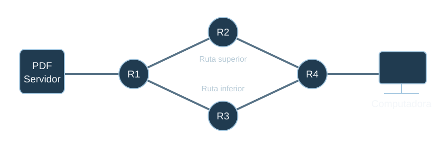

¿Qué pasa cuando
descargamos un PDF?
OSI organiza la comunicación en siete capas. Seguimos el PDF usando TCP sobre IP.
Encapsular es poner dentro
Trama → paquete IP → segmento TCP → datos del PDF.
¿Por dónde viajan los paquetes IP?
Los paquetes avanzan
salto a salto.
Cada router consulta la IP de destino y su tabla de reenvío. Distintas comunicaciones comparten los enlaces.

Si cambia la ruta o un paquete se demora, pueden llegar fuera de orden.
¿Cómo cruza el paquete de un equipo al siguiente?
Un paquete IP viaja
dentro de una trama.
Delimitar significa reconocer dónde empieza y termina cada trama para interpretar su contenido.
Trama 1
Trama 2
Esquema conceptual: la forma de reconocer los límites depende del protocolo. «Inicio» y «Fin» no representan campos universales.
¿Qué pasa si una trama llega dañada?
El enlace descarta.
TCP recupera los datos.
Ethernet detecta alteraciones con CRC. TCP en el servidor puede retransmitir los bytes que faltan.
En el enlace: R4 → computadora
Entre servidor y computadora
Ejemplo con conexión ya establecida: llegaron los bytes 100–199. ACK 200 indica que el siguiente byte esperado es el 200.
El CRC no pide la retransmisión a TCP: la falta de datos se detecta mediante mecanismos de TCP, como un temporizador.
¿Cómo se complementan estas funciones en el viaje completo?
Las capas colaboran
para descargar el PDF.
Encapsular, encaminar, reconocer las tramas y recuperar datos faltantes.
Estas funciones también colaboran en otras transferencias con TCP sobre IP, como cargar una página web sobre esa conexión.
Basado en «Guion para exponer Redes de Datos». Diagramas y simulaciones didácticos.